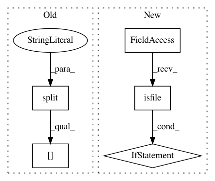

4ca69cade879512cd1a6a6f83ed5f1176b46f895,keras_model.py,Code2VecModel,_load_or_build_inner_model,#Code2VecModel#,154
Before Change
if not self.config.MODEL_LOAD_PATH:
self.keras_model = self._build_keras_model()
else:
load_released_model = self.config.MODEL_LOAD_PATH.split(".")[-1] == "release"
if load_released_model:
self.keras_model = self._build_keras_model()
self.keras_model.load_weights(self.config.MODEL_LOAD_PATH)
After Change
// when loading the model for further training, we must use the full saved model file (not just weights).
must_use_full_model = self.config.TRAIN_DATA_PATH
if must_use_full_model and not os.path.isfile(model_file_path):
raise ValueError(
"There is no model at path `{model_file_path}`. When loading the model for further training,"
"we must use a full saved model file (not just weights).".format(model_file_path=model_file_path))
use_full_model = must_use_full_model or not os.path.isfile(weights_file_path)
if use_full_model:
self.keras_model = keras.models.load_model(model_file_path)
In pattern: SUPERPATTERN
Frequency: 3
Non-data size: 5
Instances
Project Name: tech-srl/code2vec
Commit Name: 4ca69cade879512cd1a6a6f83ed5f1176b46f895
Time: 2019-03-25
Author: eladnah@gmail.com
File Name: keras_model.py
Class Name: Code2VecModel
Method Name: _load_or_build_inner_model
Project Name: deepgram/kur
Commit Name: a89d7dd73bf376f74264512e2a22d8b55b103853
Time: 2017-04-10
Author: ajsyp@syptech.net
File Name: kur/loggers/binary_logger.py
Class Name: BinaryLogger
Method Name: enumerate_statistics
Project Name: danforthcenter/plantcv
Commit Name: 934b0e505169c80fb0e068aa45add2277ee2b721
Time: 2016-04-25
Author: noahfahlgren@gmail.com
File Name: lib/plantcv/analyze_NIR_intensity.py
Class Name:
Method Name: analyze_NIR_intensity